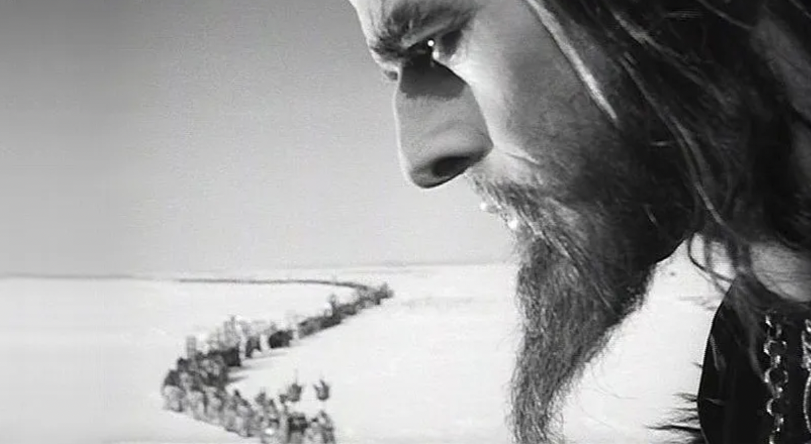

Richard Pipes argued that political power in Russia is "patrimonialist,"" that is as a type of political and economic organization where sovereignty and ownership rights blend to the point of being indistinguishable. In this regime, political power is exercised in the same manner as economic power. Note the lack of separation of political and economic powers. Private property cannot contrain political power. Pipes borrows the idea of the patrimonial regime from Max Weber and applies it to the case of Russia.
Sergei Eisenstein's film Ivan the Terrible (Part II, 1945) The shot above especially caught my eye; it’s towards the end, with a parade of peasants coming to beg Ivan to return from a self-imposed exile. The image is admittedly a pretty on-the-nose depiction of someone as being the Father of A Nation, but even I had to admit it’s beautifully set up.